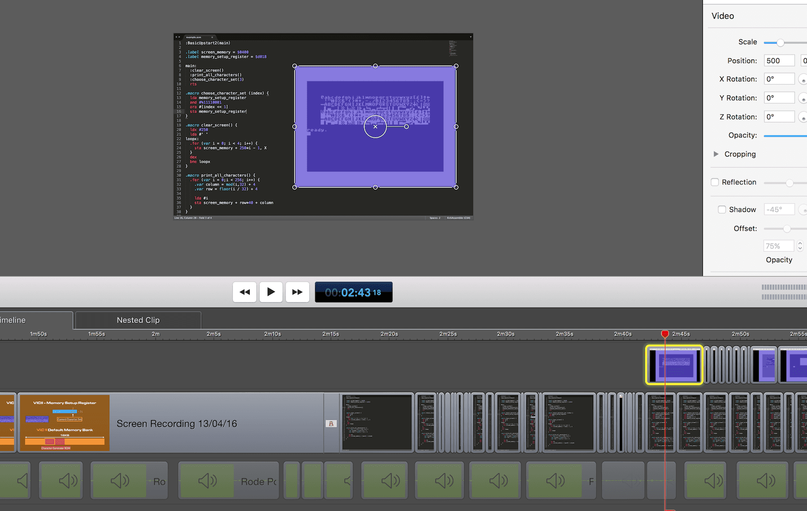

Behind the Scenes - Part 2
After the second day of work, the episode is done! It is also my second day of using Snapchat.
See how I record and edit audio and video for one 64bites episode.
Update: Here's the first part. You can also watch the finished episode for free.

This Snapchat thing is pretty fun!
Recording and immediately publishing 10-second videos from time to time feels liberating. There is no need for special preparations, writing scripts, etc. You just record and send. If you don't record it externally, it will disappear after 24 hours.
It feels strangely comfortable to me, and I think I'll be using Snapchat in the future.
Feel free to install Snapchat and add me (mehowte) if you want to see what I am working on.
Watch the second part of 'Behind the Scenes' video
Below is the video of the second day of work. It shows how I record the audio track, cut failed attempts, record and edit the video and why I use Sublime Text instead of Vim.